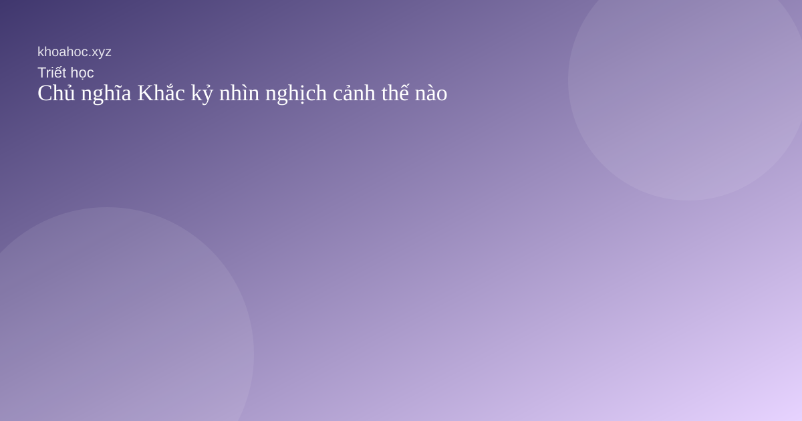

Phương Đông
Đạo, vô vi, tu dưỡng và cách sống hài hòa với tự nhiên.
Đi theo từng nhánh để đọc đúng mạch nội dung của trang Triết học.
Đạo, vô vi, tu dưỡng và cách sống hài hòa với tự nhiên.
Logic, đạo đức học và những câu hỏi về tự do con người.
Những bài thơ gợi mở về thân phận, tình yêu và thời gian.
Những bài thơ kinh điển mở rộng cảm thức về nhân sinh.

Trước khi hỏi nên làm gì, có lẽ ta cần hiểu mình đang sống theo điều gì.

Bình thản không đến từ việc tránh khó khăn mà từ cách ta đáp lại hoàn cảnh.

Giảm bớt sở hữu không tự động đem lại tự do nhưng mở ra khả năng lựa chọn sáng suốt hơn.